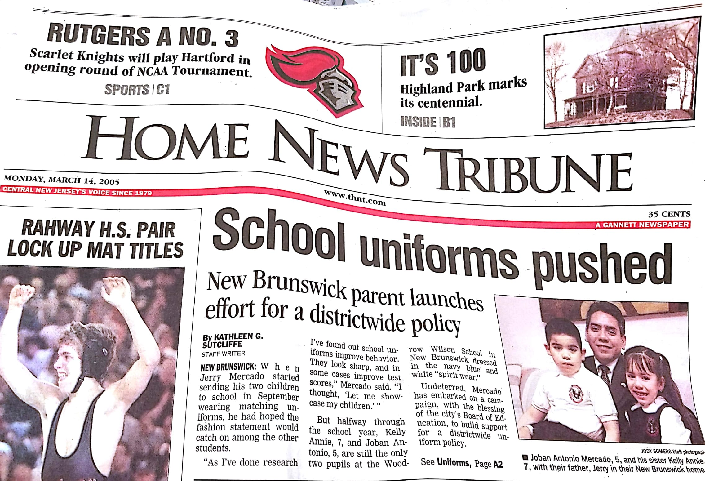
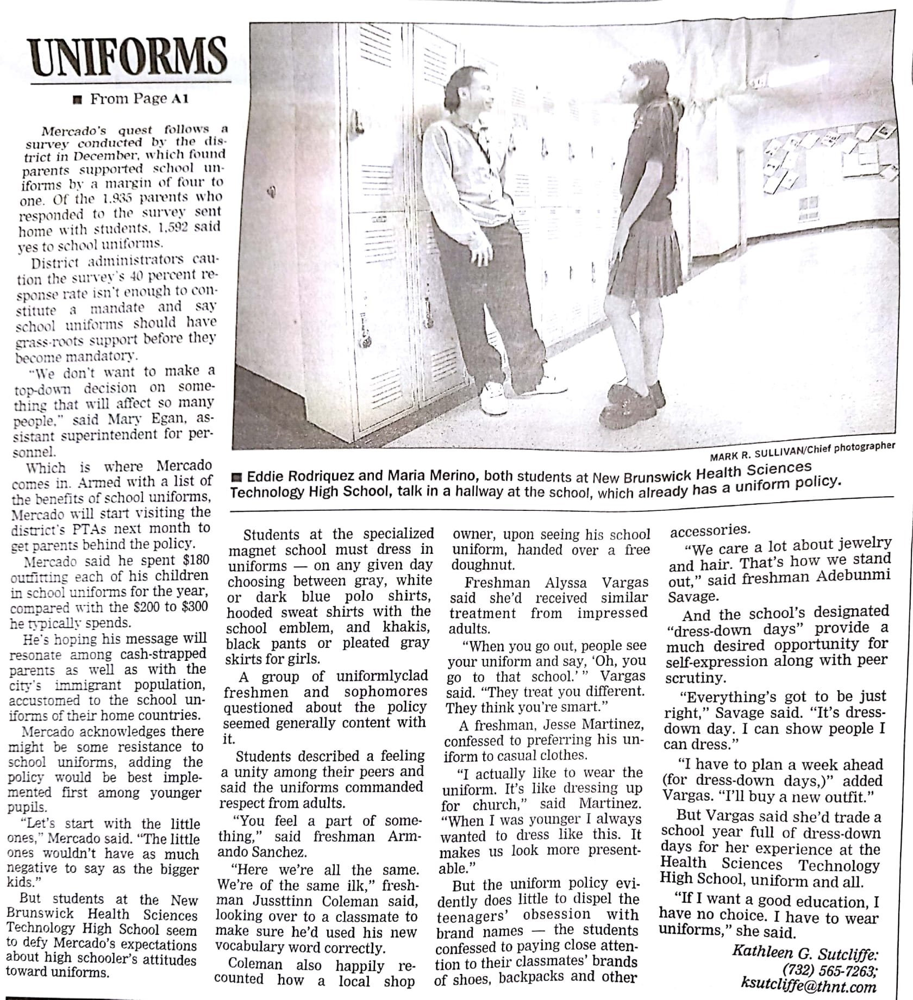
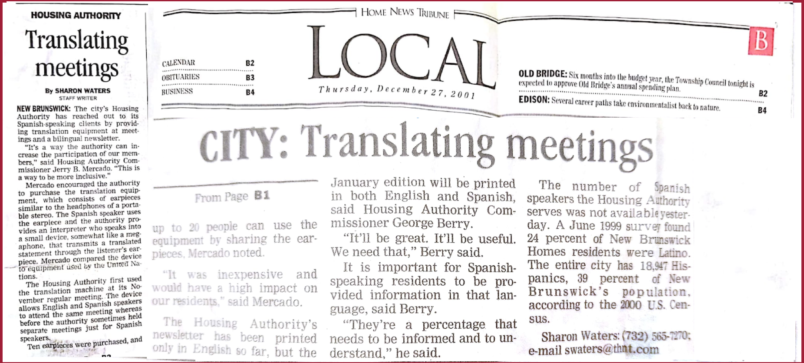

VOTE POR JERRY B. MERCADO
Candidato a la Junta de Educación de New Brunswick

Uniformes de las Escuelas Públicas

Uniformes de las Escuelas Públicas

Autoridad de Vivienda de New Brunswick

Liga de fútbol recreativo de Nuevo Brunswick

Mis Hijos

Ceremonia de Apertura de la Pequeña Liga en el 2013
Participación Educativa:
-
Abogé por un programa de uniformes escolares obligatorios para estudiantes en el público de New Brunswick.
-
Creé la Liga Pequeña de New Brunswick para enseñar béisbol competitivo.
Participación en la Comunidad:
-
Implementé un programa de becas para residentes de viviendas públicas.
Entrené a los niños de New Brunswick en diferentes programas atléticos.
Experiencia en la Junta en New Brunswick:
-
Fundador y Presidente: La Pequeña Liga de New Brunswick: 2012 -2016.
Miembro de la Junta: Junta de Ajuste de Zonificación: 2002 - 2009.
-
Comisionado: Autoridad de Vivienda de New Brunswick.